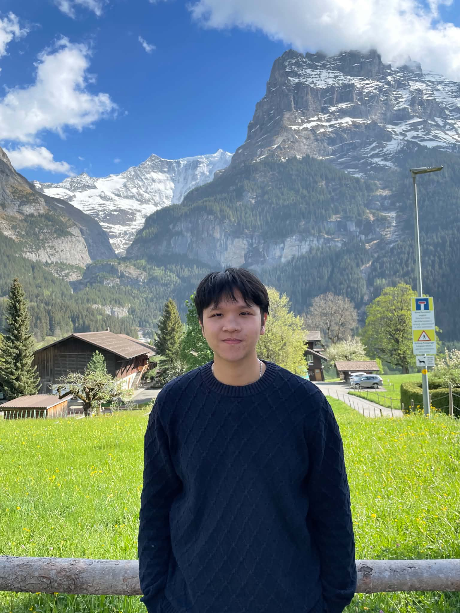

MSc. Quoc-Huy Trinh
Deep Generative Model · Computer Vision · NLP · Multimodal
Hi 👋, I'm Huy — a Vietnamese A.I researcher. I was a Research Assistant at Carnegie Mellon University (CMU) and Northwestern University in the US, where my research centred on multimodal large language models, medical image analysis, and trustworthy A.I. I'm passionate about exploring new ideas at the frontier of deep learning and computer vision, and I love building things just to see how they work. Outside of research, I enjoy reading, soccer, music, and films.
My research is supervised by Prof. Minh-Triet Tran, Prof. Ulas Bagci, Prof. Min Xu, Prof. Sebastian Szyller, Prof. Bo Zhao, Dr. Debesh Jha, and Msc. Hai-Dang Nguyen.
Research Interests
More about my experience, education and awards on the About page.